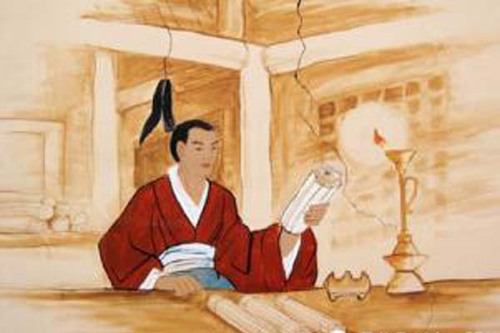

孙敬

东汉时候，有个人名叫孙敬，是着名的政治家。他年轻时勤奋好学，经常关起门，独自一人不停地读书。每天从早到晚读书，常常是废寝忘食。读书时间长，劳累了，还不休息。时间久了，疲倦得直打瞌睡。他怕影响自己的读书学习，就想出了一个特别的办法。古时候，男子的头发很长。他就找一根绳子，一头牢牢的绑在房梁上。当他读书疲劳时打盹了，头一低，绳子就会牵住头发，这样会把头皮扯痛了，马上就清醒了，再继续读书学习这就时孙敬悬梁的故事。